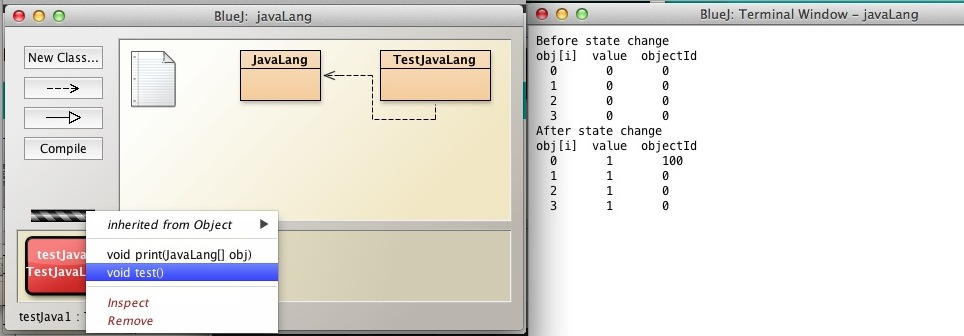
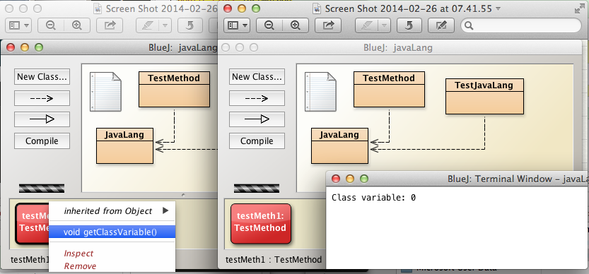
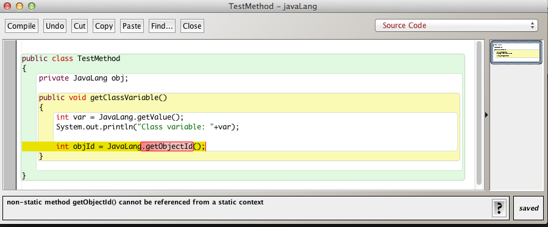
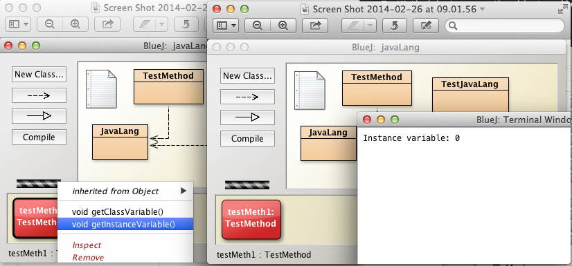
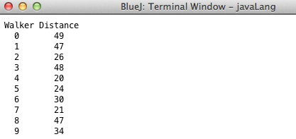
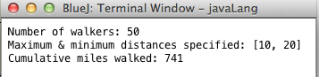

Objectives
Static variables and methods belong to the class rather than to an instance of the class. Static methods may be invoked using the class name (example System.out) whereas non-static methods may only be invoked on an object. A Static variable is shared by every instance of its containing class and is to be found at one fixed location in memory.
Class (static) variables
Create a new project named javaLang in your current session.
Create a new class in the project with the following source code:
public class JavaLang
{
private static int value = 0;
public void incrementValue()
{
value += 1;
}
public static int getValue()
{
return value;
}
}This class has a
- static int field
- public method to increment the field (effectively a mutator)
- getter for the field.
Consider the class variable:
static int value;The default initialization of a static variable is zero. See here and here.
- Nevertheless, some may consider code easier to read if such a variable is explicitly initialized even when the required initial value is zero.
Check that this code compiles without error.
Now create a second class named TestJavaLang with the following code:
public class TestLang
{
/**
* Print the values of the JavaLang objects' static variables
*/
public void test()
{
int nmrObjs = 4;
//create array of references to JavaLang objects
JavaLang[] obj = new JavaLang[nmrObjs];
//instantiate the JavaLang objects
for(int i = 0; i < nmrObjs; i += 1 )
{
obj[i] = new JavaLang();
}
System.out.println("Before state change");
print(obj);
//Method incrementValue invoked on JavaLang object
obj[0].incrementValue();
System.out.println("After state change");
print(obj);
}
private void print(JavaLang[] obj)
{
System.out.println("obj[i] value");
for (int i = 0; i < obj.length; i += 1)
{
System.out.println(" "+i+" " + obj[i].getValue());
}
}
}This class has a private method void print(JavaLang[] obj) that, when inovoked, prints the static field value associated with each JavaLang object in the parameter array of JavaLang object.
The class also has a method public void test() that
- Creates an array of JavaLang objects.
- Prints out the default value of the static field in each JavaLang object.
- Invokes the method public void incrementValue() on a particular JavaLang object.
- Prints out the values of the static variables which confirm that
- Method incrementValue on one object changes the static variable value as seen by all objects.

Non-static (instance) variables
We shall now introduce an instance variable to class JavaLang
private int objectId;Also, add a mutator and accessor:
public void setObjectId(int objectId)
{
this.objectId = objectId;
}
public int getObjectId()
{
return objectId;
}Refactor the method test to include changes to the instance variable in addition to the changes to the class (static) variable already programmed.
/**
* Print the values of the JavaLang object static variable
*/
public void test()
{
int nmrObjs = 4;
//create array of references to JavaLang objects
JavaLang[] obj = new JavaLang[nmrObjs];
//instantiate JavaLang objects
for(int i = 0; i < nmrObjs; i += 1 )
{
obj[i] = new JavaLang();
}
System.out.println("Before state change");
print(obj);
//Method incrementValue invoked on JavaLang object
obj[0].incrementValue();
//Method setObjectId invoked on JavaLang object
obj[0].setObjectId(100);
System.out.println("After state change");
print(obj);
}
private void print(JavaLang[] obj)
{
System.out.println("obj[i] value objectId ");
for (int i = 0; i < obj.length; i += 1)
{
System.out.println(" "+i+" "+obj[i].getValue()+" "+obj[i].getObjectId());
}
}The important points to note in Figure 1 are that
- When class (static) variable is changed, the change applies across all objects.
When the instance (non-static) variable is changed by invocation on a particular object, the change applies only to that object's state.

Static and non-static methods
Here we will compare invocations of static and non-static methods.
Within the BlueJ javaLang project create a new class named TestMethod.
Replace the default code with the following:
public class TestMethod
{
public void getClassVariable()
{
int var = JavaLang.getValue();
System.out.println("Class variable: " + var);
}
}Open the JavaLang source code in the editor and change the signature of the getValue method from
public int getValue()to
public static int getValue()As you can see, we have added the static keyword to the method signature. The reason for this change will become evident below.
Test this method as follows:
- Compile the class TestMethod.
- Create an instance of TestMethod on the object bench.
- Invoke getClassVariable.
- Observe that the value of the static variable should be displayed as 0, the default value (See Figure 1).

Note that this class, TestMethod, does not have fields, just a method getClassVariable().
Notice the statement:
int var = JavaLang.getValue();Note the following important points:
- This method invocation, JavaLang.getValue() retrieves the current value of the class variable in JavaLang.
- The invocation is effected by intervening the dot (.) notation between the class name, JavaLang and the method getValue.
- It is not necessary that a JavaLang object exist in order to
- access the static variable
- invoke the static method
We will now examine how invoking a non-static method is different.
Recall that JavaLang also has an instance variable objectId.
Attempt to retrieve the value of this variable by adding the following line to getClassVariable and compiling the source code. This is the method we used above to retrieve the class variable value.
int objId = JavaLang.getObjectId();The code will fail to compile and flag an error that a non-static method getObjectId cannot be referenced from a static context. (Figure 2).

Let's resolve this issue as follows by refactoring TestMethod class:
- Remove the line of code that we introduced: int objId = JavaLang.getObjectId();.
- Introduce an instance variable JavaLang obj.
- Write a default constructor
- Instantiate the instance variable
- obj = new JavaLang();
- Write a method getInstanceVariable to
- get the value of the JavaLang instance variable
- Test by
- Compiling
- Creating a new TestMethod instance on the object workbench
- Invoke getInstanceVariable
- Verify default value, 0 , returned and printed to screen
See Figure 3.
Here is the refactored TestMethod class.
Carefully study this to gain an understanding of how class and instance methods are invoked.
public class TestMethod
{
private JavaLang obj;
/**
* Default constructor
*/
public TestMethod()
{
obj = new JavaLang();
}
public void getClassVariable()
{
int var = JavaLang.getValue();
System.out.println("Class variable: "+var);
}
public void getInstanceVariable()
{
int objId = obj.getObjectId();
System.out.println("Instance variable: "+objId);
}
}
Finally see here for further information on use of the static keyword.
- Note in particular that
- you can refer to static fields with an object reference but
- this is discouraged because it does not make it clear that they are class variables.
Exercises
Exercise 1
You are provided with partially-completed classes named
- Event
- Walker
The Walker class has
- A field that keeps a running total of all the kilometers walked by all the walkers (Walker objects) in a particular Event (object)
- a getter for the above field
- A constructor with a parameter to indicate the number of miles walked by an individual walker.
The Event class has
- a list of walkers
- a means of randomly generating the distance to be walked by an individual walker
- a prescribed minimum and maximum distance to be walked
- a constructor with a parameter that sets the number of walkers and max and min distances
- a public method walkTheWalk to
- simulate the walk event and
- return the cumulative number of miles walked, that is, the sum of the miles that each walker covered.
Here are the skeletons of the classes to be developed:
public class Walker
{
// provide field to record cumulative miles walked
public Walker(int milesWalked)
{
}
// provide a getter here
}
import java.util.ArrayList;
import java.util.Random;
public class Event
{
// fields
...
...
public Event(int numberWalkers, int maxDistance, int minDistance)
{
// initialize fields
}
public int walkTheWalk()
{
for (int i = 0; i < numberWalkers; i += 1)
{
// generate random distance
// create walker
// add walker to list
}
// return total miles walked by all walkers
}
}Exercise 2
Test the application in Exercise 1 as follows:
Write method printWalkerDistances() that:
- Prints two columns of data
- Columm 1: Walker (the walker number, example 0, 1, 2....number walkers -1)
- Column 2: Distance (the distance walked by each walker)
- See Figure 1 for typical output.
- Prints two columns of data
Write method printEventData() that prints the:
- number of walkers
- maximum and minimum distance attributes
- the cumulative distance walked by all walkers in the event
- enforce a constraint that the method prints data only following invocation of walkTheWalk
- See Figure 2 for typical output
Instantiate Event event with these parameters;
- number walkers 10
- maximum distance 50
- minimum distance 20
Invoke the methods
- printEventData
- invocation should fail to print data and trigger a warning to first invoke walkTheWalk
- walkTheWalk
- printEventData
- printWalkerDistances
- printEventData
Check the cumulative miles walked (as shown Figure 1) against the sum of the distances output (as shown Figure 2).
 